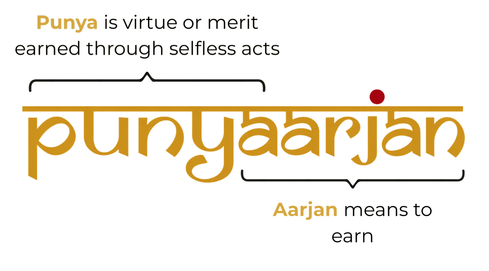

We often think of human beings as fundamentally self-interested. Much of economics has traditionally been built around this
idea: people make choices to improve their own well-being, seeking security, comfort, pleasure or satisfaction.
But look around, and another side of human nature is impossible to ignore. People give their time to help a neighbour. They
donate to strangers, teach without pay, care for family members, volunteer for causes they believe in, and use their skills to
solve problems that matter to them.
Why do we do these things?
One answer is that giving feels good.
In 1989, economist James Andreoni introduced an influential theory of
“warm-glow” giving. He proposed that people can care both about the good their contributions do for others and about the satisfaction they
derive from giving itself. The feeling of knowing I helped can be a reward in its own right.
In 2006, neuroscience research provided early evidence that charitable giving
activates brain regions involved in reward. Subsequent research has linked giving to
greater happiness and a
stronger sense of purpose. Together, these findings offer a scientific basis for the idea that helping others can enrich our
own lives, too.
This does not mean that people give simply to feel good. Generosity can arise from compassion, duty, love, solidarity,
personal values or a genuine concern for another person’s well-being. Often, these motivations coexist.
Long before economists and neuroscientists studied the rewards of generosity, cultures, religions and philosophies around the
world had recognised that doing good carries a value of its own. The Sanskrit word punya captures one expression of
this idea: there is a moral or spiritual merit associated with good deeds.
Whether understood as warm glow, punya, or through the emerging science of generosity, these perspectives converge on
the idea that when we make someone else’s life better, we enrich our own in the process. Not necessarily through material
gain, but through a deeper sense of meaning, fulfilment, connection and the knowledge that our actions have made a difference.
This is the idea behind Punyaarjan.

Punyaarjan literally means “earning punya.” We believe that when we put what we have for the benefit of others, we
create value on both sides. Our time, knowledge, skills, resources, relationships and influence can help others overcome
challenges while giving us a deeper sense of purpose.
What we’re working on
We draw on a principle from the
effective altruism
community: to do the most good, focus on problems that are important, neglected, and solvable.
Healthcare in developing regions like Nepal is one such challenge. Despite the dedication of many healthcare workers and
community initiatives, gaps in access to medical resources and expertise persist. Innovative technology offers new ways to
address these gaps, but
lasting progress
depends on local commitment and the capacity to sustain solutions over time.
We believe the willingness to help is already there. But the connection between people who care, those who have the knowledge
and resources to contribute, and the healthcare problems that need attention is what is missing.
We work to build these connections. We work to adapt technological innovation, strengthen community initiatives, and improve
health education and awareness. We turn scattered goodwill into focused action in healthcare.
Whether you are an expert with knowledge to share, a young person eager to learn and contribute to our cause area, a
professional looking to apply your skills beyond your job, or someone who cares about making things better, we invite you to
join Punyaarjan.